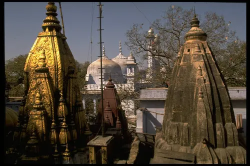
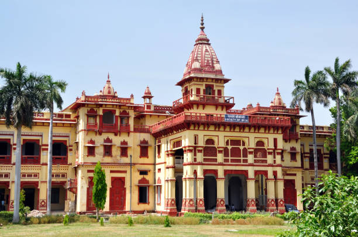

About Varanasi

History of Varanasi
Varanasi, also known as Kashi or Banaras, is one of the oldest continuously inhabited cities in the world. With a history spanning over 3,000 years, it has been a center of spirituality, learning, and culture. The city's mention in ancient texts, including the Rigveda, solidifies its deep-rooted significance in Indian heritage.

Importance in Hindu Culture
Varanasi is considered the spiritual heart of India. The sacred river Ganges flows through the city, attracting devotees who perform rituals and prayers. The Kashi Vishwanath Temple, dedicated to Lord Shiva, stands as a beacon of devotion and pilgrimage, with thousands visiting daily for blessings and spiritual enlightenment.

Famous Personalities Associated with Varanasi
Varanasi has been home to many influential figures, including poet Tulsidas, musician Ravi Shankar, and shehnai maestro Bismillah Khan. It is also the birthplace of Pandit Madan Mohan Malaviya, the visionary behind Banaras Hindu University (BHU), which remains one of India's most esteemed educational institutions. The city continues to be a source of inspiration for artists, poets, and scholars from around the world.